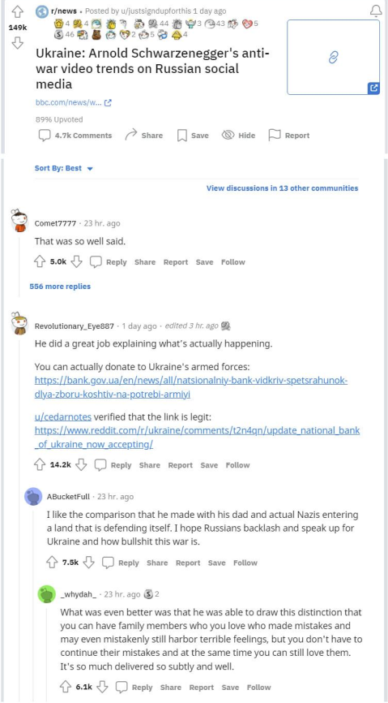
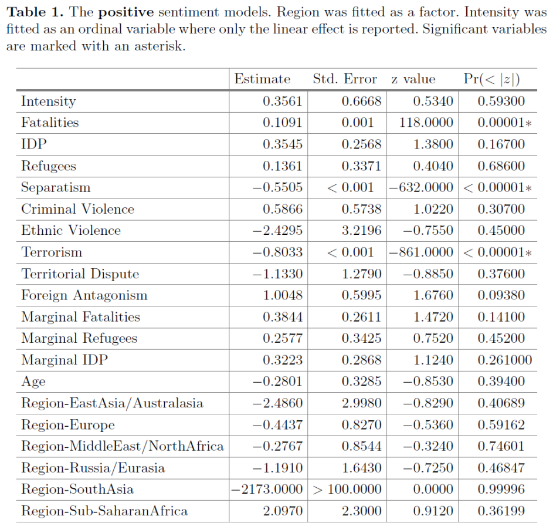
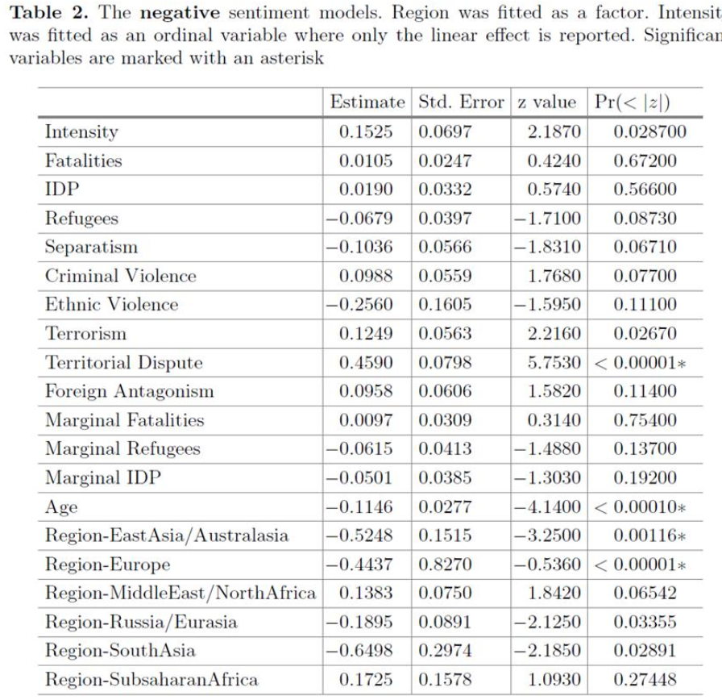

收录于合集 #比较政治学 121个
文献来源：
Cole, J. R., Xu, Y., & Reitter, D. (2016, June). How people talk about armed conflicts. In International Conference on Social Computing, Behavioral- Cultural Modeling and Prediction and Behavior Representation in Modeling and Simulation (pp. 366-376). Springer, Cham.
作者简介：
Jeremy R. Cole; Ying Xu; David Reitter: 宾夕法尼亚州立大学信息科学与技术学院博士研究生
战争和武装冲突必然带来死亡、受伤和流离失所。那么，匿名的网络评论者是如何谈论战争和武装冲突的？具体来讲，人们针对战争的评论大多是积极的还是消极的？这两类评论在何种情况下会得到赞同，何种情况下会遭到反对？本文的三位作者对这一少有人涉足的问题进行了探索。
导论
战争与武装冲突每年都造成冲突地区数以万计的伤亡和无数人的流离失所。然而，生活在相对和平地区（如美国）的人们对这些武装冲突的看法、意见和行动绝非无关紧要，因为这会对其所在国家的外交政策产生影响。这些看法与讨论被传统媒体和社交媒体所交互塑造，并在社交媒体的在线讨论中呈现。
那么，人们是如何谈论、评价武装冲突的？针对武装冲突的积极、消极评论，在线上讨论中被如何对待？何种因素会对人们针对这些评论的态度产生影响？本文检验了冲突严重性、冲突地区、冲突起因等诸多变量在对特定武装冲突的讨论中所呈现出的影响，以期对这一问题的研究进行初步的推进。
研究背景
从第二次世界大战到越南战争、海湾战争、阿富汗战争和伊拉克战争，围绕战争与武装冲突的公共舆论问题被许多学者所考察。互联网与社交媒体的普及使得针对战争的舆论变得尤为重要。然而，在社交媒体背景下的相关研究十分有限，且大多研究关注的是社交媒体在政治抗议及其演化的武装冲突中所扮演的组织工具与协调平台角色。也有学者关注媒体报道在人们对武装冲突看法的形成过程中的作用，认为新闻媒体以一种有偏差的方式报道和建构武装冲突，即在是否报道某一冲突以及采用何种框架上存在偏差。而社交媒体对这一偏差带来的影响，近年来也被学者所关注。
在现有涉及武装冲突的特征与公众看法之间关系的研究中，Berinsky发现，
公众对冲突的态度不是由冲突本身的特征（如造成的人员伤亡与财产损失）所决定的，而是由其政治立场决定的
。如果其所在的政党支持这一战争，那么其很有可能同样支持。Gartner则发现，相比于某一冲突的总伤亡数，当年发生的“边际伤亡数”在预测对战争的看法时更加有效。即人
**们对战争的态度更可能受近期的战争状况影响，而不是这一战争的长期性质。
**
社交媒体及其提供的庞大数据为研究人们围绕武装冲突的讨论提供了宝贵机会。虽然现有研究已对社交媒体在冲突发生不同时期所扮演的角色以及社交媒体上公共舆论的演变进行过研究，但仍未有研究对公众——尤其是相对和平地区的公众——针对某一武装冲突的认知进行探究。
本文利用Reddit平台的网民讨论以及“武装冲突数据库（Armed Conflict Database）”对这一问题进行了初步探索。
Reddit平台是社交化的新闻站点，其口号是“先于新闻发声，来自互联网的声音”。Reddit包含诸多子论坛，每个板块都有其特定的主题。用户可以提交新闻链接或原创帖子，其他用户可以在帖子下评论，并对其他评论进行回复或“点赞”“点踩”操作，以表达自己的态度。相对于Twitter，Reddit的用户在文化上较为同质，绝大多数用户来自美国、西欧和大洋洲。

Reddit社区的帖子与评论
“武装冲突数据库（Armed Conflict Database）”由国际战略研究所（International Institute for Strategic Study）开发，包含世界各地武装冲突的各种指数，包括死亡人数、国内流离失所者、难民数。同时也包含了与该冲突起因相关的种族、领土、恐怖主义等变量。冲突被划分入以下地区：加勒比海与北美、东亚与大洋洲、欧洲、中东与北非、撒哈拉以南的非洲、俄罗斯和欧亚大陆、南亚。
研究问题
本文的研究问题指向人们对武装冲突的感知和讨论。作者使用了时间跨度为2012~2014年，容量为426GB的Reddit平台数据，与48起武装冲突的数据共同组成研究所使用的数据库。Reddit评论的收集方式是通过针对每一冲突所编译的关键词集进行搜索，收集与之相匹配的评论。实践中，评论数据的最大来源是世界新闻板块。
作者用两项指标来分析这些评论：其一是情感（sentiment），其二是可接受性（acceptability）。情感指标表示的是这一评论对该冲突的总体倾向为“积极”还是“消极”，这一分类通过斯坦福NLP情感分析器（Stanford NLP Sentiment Analyzer）进行；可接受性指标表示这一评论总体上被社区的用户赞同还是反对。情感指标被用来对评论数据进行分组，而可接受性是本文分析的被解释变量。
此外，作者提出了六种解释变量，分别是：严重性（Severity），即战争造成的伤亡、难民数。地区（Region），即数据库中冲突发生的区域；边际严重性（Marginal Severity），即在评论所处年份该冲突的严重性；冲突时长（Age），即评论所处年份是该冲突的第几年；性质（Nature），即这一冲突的核心问题与起因，包括分离主义、恐怖主义、领土纠纷等等；专家看法（Expert Perception），即专家对冲突水平的评级。
研究方法
从数据的预处理结果来看，负面情感的评论数量几乎是正面情感评论数量的20倍，即对战争的反对和悲伤情感处于压倒性优势 。积极情感主要包括乐观、希望情感以及一定的戏谑与讽刺情绪。情感中立和没有被赞或被踩的数据被排除于研究之外。最终的数据包含781条积极评论和14289条消极评论。
在研究模型方面，本文使用GLMM模型来解释何种因素会影响某一冲突中，积极与消极评论的可接受性。考虑到缺失值与解释变量的数量，作者为每个自变量单独建模，使用Bonferoni校正，结果显著性阈值为p = 0.0025。需要注意，作者对因变量可接受性的编码方式为：不可接受（1），可接受（0）。
研究结果
研究结果如Table 1、Table 2所示。Table 1表示解释变量对积极评论可接受性的影响；Table 2表示解释变量对消极评论可接受性的影响。

如Table 1所示，对于积极评论而言，死亡数、分离主义与恐怖主义对其可接受性有着显著影响。其中， 死亡数的增加会导致积极评论更有可能不被接受；而冲突因恐怖主义和分离主义而起时，针对其积极评论被接受的可能性增加。

如Table 2所示，消极评论的可接受性受到领土争端、冲突时长、欧洲、东亚与大洋洲地区这些变量的显著影响。 针对欧洲、东亚与大洋洲地区冲突的消极评论更有可能被接受；而冲突时长越长，消极评论也越容易被接受。而针对领土争端所引起冲突的消极评论则更有可能不被接受。
讨论
研究发现， 绝大多数评论都带有消极情绪，这可能是人们对武装冲突的默认评价。 针对欧洲、东亚与大洋洲地区冲突的消极评论更有可能被接受，可能是因为这些地区与Reddit用户有着高度重合的政治与文化身份。冲突时长的负面效应可能来自持续的冲突为公众带来的精神麻木与厌倦。有趣的是，针对冲突特征的客观变量，如死亡人数、流离失所人数与难民人数，对围绕这一冲突消极评论的接受度并无显著影响。
对于积极评论而言，主要的影响来自死亡人数以及被认为是由恐怖主义和分离主义所引起的冲突。对于Reddit用户群体而言，反对恐怖主义的冲突与分离主义所引起的冲突能够得到更多的支持似乎并不奇怪。
本文对结果的解释很大程度上是推测性的，更精细的情感测量可能让今后的研究更准确地推定造成这些影响的真实原因。另外，本文研究结果在Reddit以外社区的推广也是值得关注的有趣问题。
结论
本文试图通过来自Reddit社区的大样本数据，系统地研究社交媒体上公众对武装冲突的感知。研究发现，绝大多数针对武装冲突的评论在情感上是消极的。考虑到暴力冲突的性质，这是合乎逻辑的。消极评论的可接受性主要受到领土争端、冲突时长、欧洲、东亚与大洋洲地区这些变量的显著影响；而积极评论的可接受性则受死亡数、分离主义与恐怖主义的显著影响。作者在文中对出现这一结果的原因做出了推测性解释。在社交媒体时代，公众对冲突的认知在塑造外交政策方面发挥着日益重要的作用，本研究所关注的问题值得进一步推进。
编译：殷昊 审校：赵德昊 编辑：高小茜